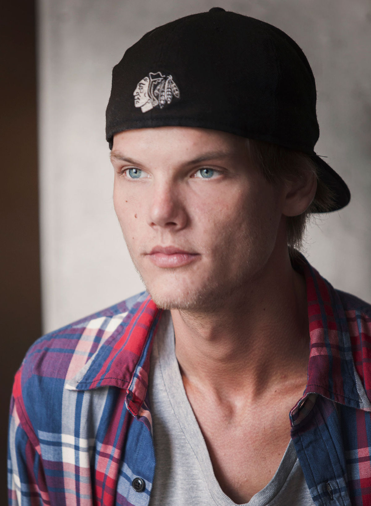

Figure out what you’re most passionate about in life and what you’re good at. And the mixture between those two and then you should give it your all, all the time.
Tim Bergling, better known by his stage name, “Avicii,” was a Swedish musician, DJ, remix artist, and record producer. Born and raised in Stockholm, he was one of the most popular musicians of his time. He showcased his music skills online to receive exposure. Avicii started making music at the age of 16 and began posting his singles on various online music forums. Soon, he caught the attention of a music label. In 2011, he achieved nationwide fame with his single ‘Levels.’ Two years later, he released his debut album, ‘True.’ His music touched a new level of experimentation, as he mixed electronic music with several genres of popular music and led the album to become a major commercial and critical success. The album made its way among the top 10 hits in more than 15 countries around the world, such as Sweden, US, and Australia. For the next few years, he toured around the globe, amassing a large fan following, and became one of the most popular DJs of this generation. However, Avicii suffered from serious mental-health issues and committed suicide on April 20, 2018.